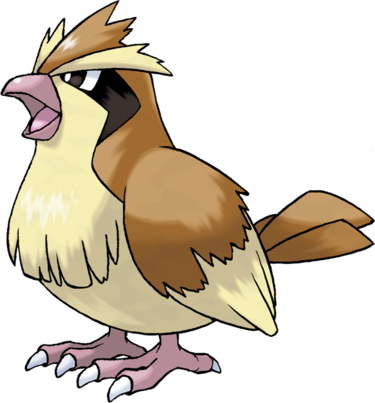

Roucool a un sens de l'orientation extrêmement aiguisé, surtout pour rentrer chez lui. Il peut localiser son nid même s'il a été déplacé. C'est un Pokémon docile, et il préfère s'enfuir en volant devant ses ennemis plutôt que de les combattre. En agitant rapidement ses ailes, il peut soulever des nuages de poussière et créer des tourbillons pour se protéger et faire fuir son potentiel ennemi. Roucool est un Pokémon très commun, et peut être trouvé dans les prés et les forêts.